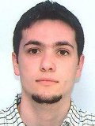
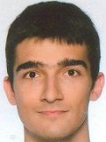
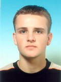

As. mr Đorđe Đurđević, asistentpredmeti:Programiranje 1, Programiranje 2, Objektno orijentisano programiranje 1, Objektno orijentisano programiranje 2, Algoritmi i strukture podataka 1, Algoritmi i strukture podataka 2, Računarska grafika kabinet: 36 e-mail: zorz@etf.bg.ac.rs |
|
As. mr Laslo Kraus, asistentpredmeti:Objektno orijentisano programiranje 1, Objektno orijentisano programiranje 2, Projektovanje softvera kabinet: 24, Paviljon "Rašović" e-mail: kraus@etf.bg.ac.rs |
|
As. mr Zaharije Radivojević, asistentpredmeti:Osnovi računarske tehnike 2, Arhitektura računara, Arhitektura i organizacija računara 1, Konkurentno i distribuirano programiranje kabinet: 37 e-mail: zaki@etf.bg.ac.rs |
|
As. MSc Žarko Stanisavljević, asistentpredmeti:Osnovi računarske tehnike 1, Praktikum iz Osnova računarske tehnike, Arhitektura i organizacija računara 2, Zaštita podataka kabinet: 37 e-mail: zarko.stanisavljevic@etf.bg.ac.rs |
|
As. MSc Saša Stojanović, asistentpredmeti:Programiranje 1, Programiranje 2, Operativni sistemi 1, Operativni sistemi 2, Sistemsko programiranje/Sistemski softver, Mikroprocesorski sistemi, Računarski VLSI sistemi kabinet: 18 e-mail: stojsasa@etf.bg.ac.rs |
|
As. mr Miloš Cvetanović, asistentpredmeti:Baze podataka 1, Baze podataka 2, Informacioni sistemi 1, Informacioni sistemi 2, Softverski alati baza podataka kabinet: 36 e-mail: cmilos@etf.bg.ac.rs |
|
dipl.ing. Andrija Bošnjaković, asistent-pripravnikpredmeti:Programiranje 1, Programiranje 2, Praktikum iz programiranja 1, Praktikum iz programiranja 2, Multiprocesorski sistemi, Praktikum iz operativnih sistema, Objektno orijentisano programiranje kabinet: 36 e-mail: andrija@etf.bg.ac.rs |
|
mr Marija Punt, asistent-pripravnikpredmeti:Osnovi računarske tehnike 1, Osnovi računarske tehnike 2, Arhitektura računara, Veb dizajn, Organizacija računara, Arhitektura i organizacija računara kabinet: 37 e-mail: maki@etf.bg.ac.rs |
|
|  |
dipl.ing. Igor Anđelković, saradnik u nastavipredmeti:Praktikum iz korišćenja računara, Programiranje 1, Programiranje 2, Programiranje Internet aplikacija, Ekspertski sistemi kabinet: 37 e-mail: igor.andjelkovic@etf.bg.ac.rs |
|  |
dipl.ing. Dražen Drašković, saradnik u nastavipredmeti:Osnovi računarske tehnike 1, Praktikum iz Osnova računarske tehnike, Principi softverskog inženjerstva, Testiranje softvera, Upravljanje softverskim projektima, Računarske mreže, Računarske osnove Interneta, Internet programiranje kabinet: 37 e-mail: draskovic@etf.bg.ac.rs |
|  |
dipl.ing. Nemanja Kojić, saradnik u nastavipredmeti:Programski prevodioci 1, Performanse računarskih sistema, Programiranje u realnom vremenu, Projektovanje softvera kabinet: 37 e-mail: nemanja.kojic@etf.bg.ac.rs |
dipl.ing. Marko Mišić, saradnik u nastavipredmeti:Programiranje 1, Programiranje 2, Praktikum iz programiranja 1, Praktikum iz programiranja 2, Praktikum iz poslovne komunikacije kabinet: 37 e-mail: marko.misic@etf.bg.ac.rs |
|
 |
As. MSc Bojan Furlan, asistentpredmeti:Računarske mreže, Računarske osnove Interneta, Praktikum iz poslovne komunikacije, Programiranje u realnom vremenu kabinet: 37 e-mail: bojan.furlan@etf.bg.ac.rs |
 |
mr Nenad Korolija, viši laboratorijski inženjerkabinet: 26, Paviljon "Rašović"e-mail: nenadko@etf.bg.ac.rs |